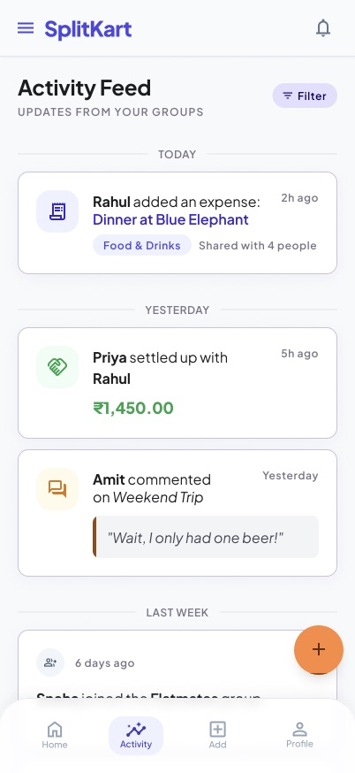
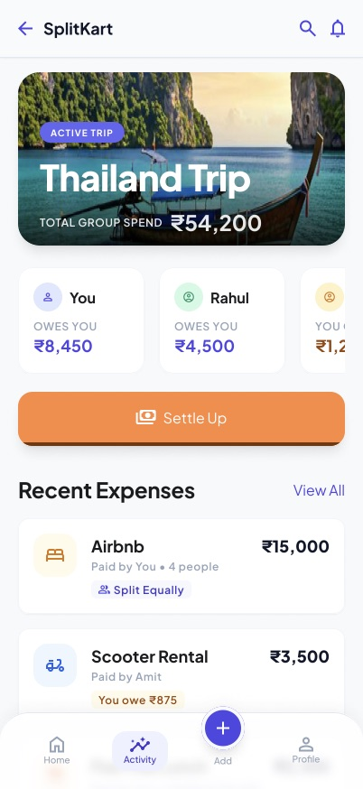
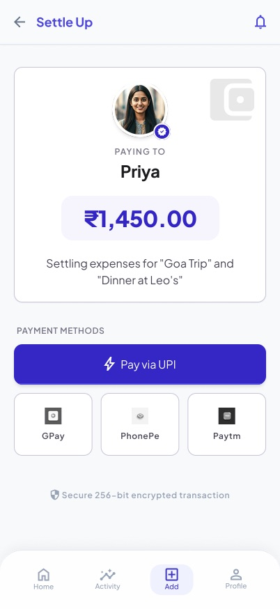
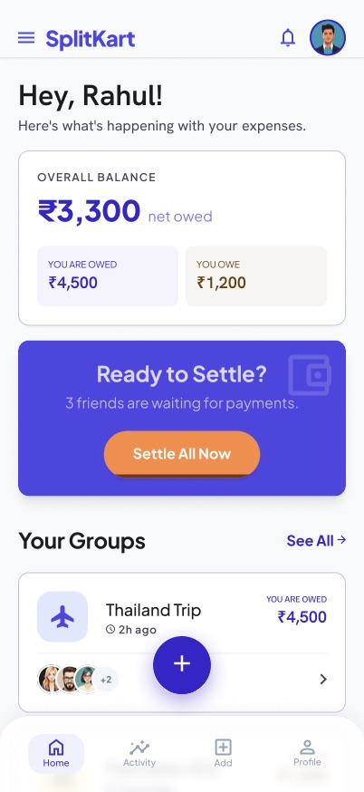
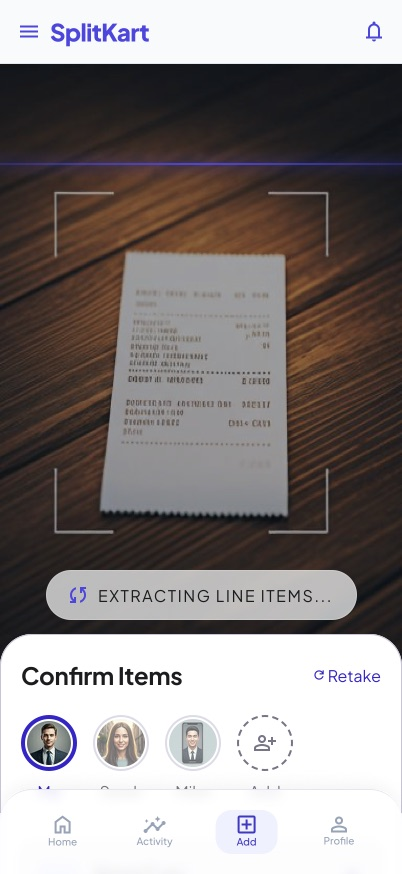
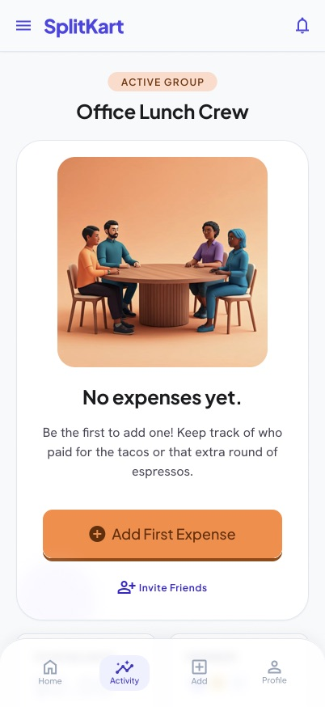
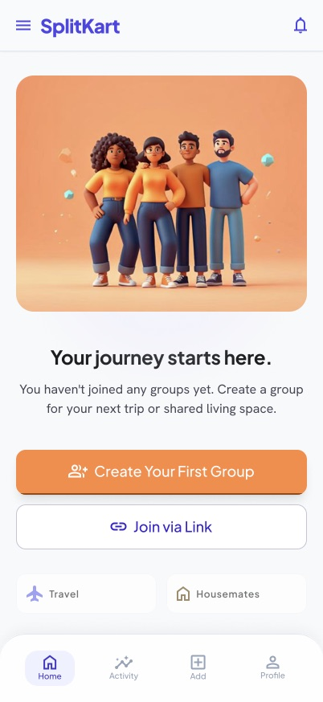
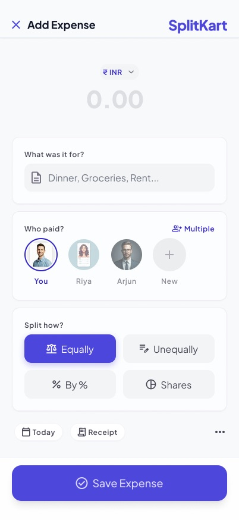
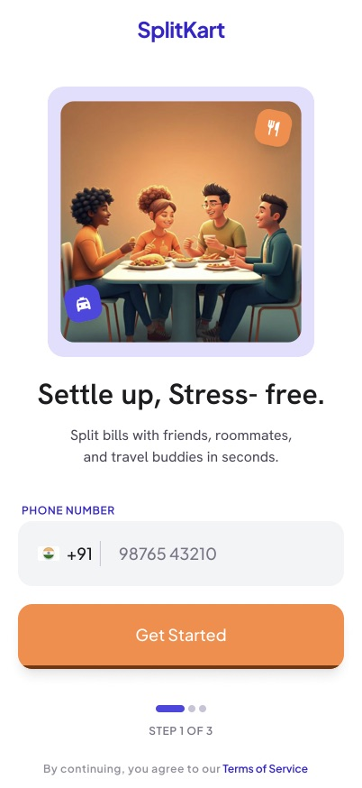

Splitkart.
A group expense-tracking experience designed to make sharing, tracking and settling expenses simpler.



The brief
Make shared spending feel easier to follow for a group. The supplied screens show onboarding, group detail, activity, bill scanning, and settling up—touchpoints that help a group understand what is happening and what to do next.
Approach
Organize the experience around the group: its members, shared activity and balances. Keep primary actions visible, present each expense in context, and make the settle-up step feel like a clear endpoint.






Design decisions
Group context stays present across screens, while expense activity and settlement are treated as distinct steps. The purple accent is used in the project imagery as a focused highlight within the interface.
Project note
The supplied project files include interface screens and flows. Launch status, research findings, and measured product results were not documented in the materials.